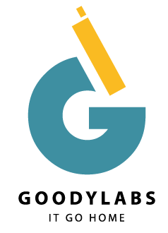
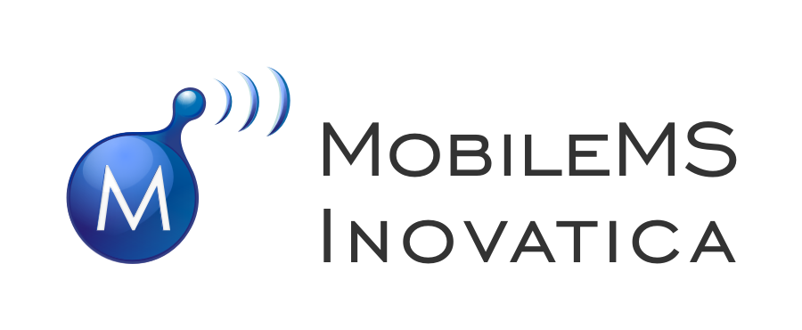
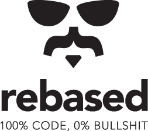
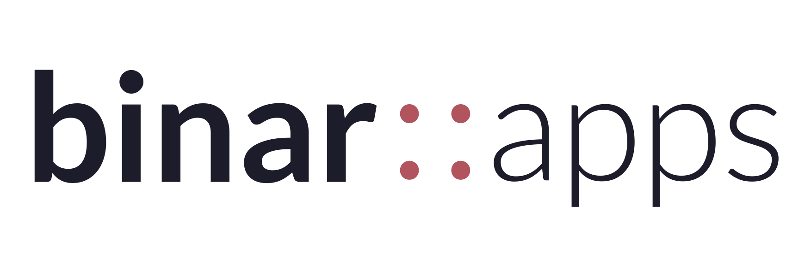
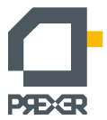
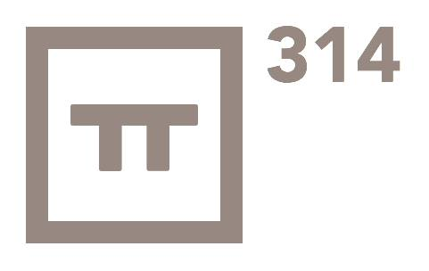
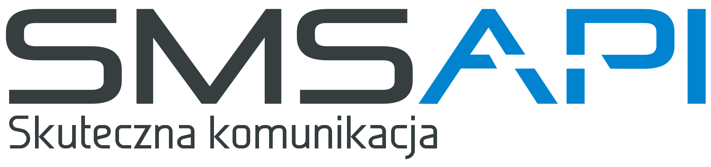
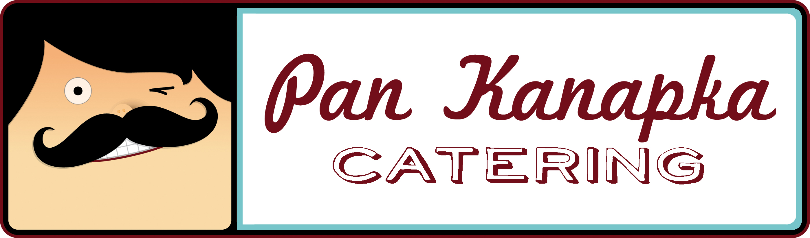
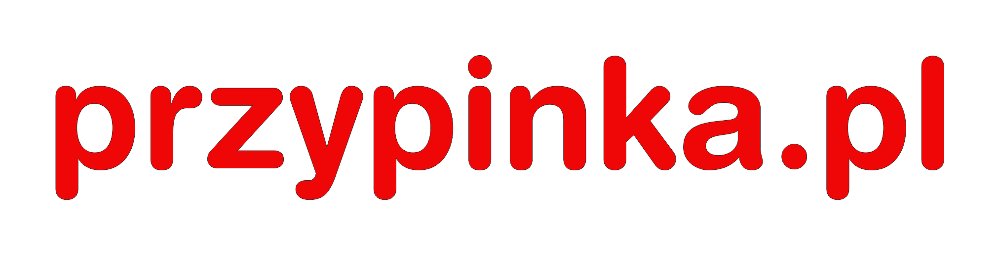

Hello world!
Rails Girls is coming to Łódź for the first time! During the free two-day workshop we'll dive into the magical world of Ruby on Rails.
Registration is now closed.
You learn designing, prototyping and coding with the help from our coaches.
You need your own laptop, curiosity and a sprinkle of imagination!
Want to help? We are looking for sponsors and speakers. Email us.
| 18.00 |
Installation partyGet know the attendees a little bit before hand. Bring your laptop so we can install Ruby on Rails for you. |
|---|---|
| 21.00 |
Coach dinnerAll of the coaches are welcome to our coach dinner, where we'll go through the program for the next day. |
| 9:00 - 10:00 |
Registration, coffee and installation festWe'll give you breakfast and help configure Ruby on Rails on your laptop. |
|---|---|
| 10:00 - 10:15 |
WelcomeOutline of the day & a word from our sponsors |
| 10:15 - 13:00 |
WorkshopJumpstart your first web application |
| 13:00 - 13:30 | Lunch |
| 13:30 - 14:00 |
Bentobox: Understanding Web AppsRecap of what we’ve learned and how it all fits together. |
| 14:00 - 14:45 |
Lightning talksŁukasz Piestrzeniewicz (Ragnarson)Kaśka Turbiasz-Bugała (Rebased) Monika Suwała (Citi) |
| 14:45 - 18:00 |
WorkshopExtend your application. |
| 21:00 |
AfterpartyOpen to everyone. Sponsors, boyfriends, girlfriends and developers that happen to be in the neighbourhood are more than welcome to join. |
Registration is now closed.
Notification of acceptance: May 30th 2014
Workshop location: Miejski Punkt Kultury Prexer
Pomorska 39, Łódź
Afterparty: Zmiana Tematu, Piotrkowska 144, Łódź
Coaches dinner: Tari Bari, Piotrkowska 138/140 (OFF Piotrkowska), Łódź
Want to help? We're looking for partners & sponsors for our non-profit event! Email us!
 Ragnarson are experienced Ruby on
Ragnarson are experienced Ruby on
Rails developers specialized in building web applications for startups since 2006.
 goodylabs have a mission to help startups as well as existing companies develop flexible and scalable web technologies. tl;dr IT GO HOME
 MobileMS Inovatica implements innovative IT solutions, especially for tourism and culture sectors, as well as provides technologies for on-line exhibits and digitalisation of art work.
 Rebased are world-class developers with impressive open-source record. They code. And they're good at it.
Rule Financial is an international company, crafting risk management solutions for the financial sector.
Lifetramp is an AirBnB-like platform for lifestyles and careers. Lifetramping community is built by open minded people who give you a possibility “to walk a mile in their shoes” – an exciting journey of self discovery to finally find what you truly love doing.
 binar::apps are agile programmers. They create software for startups and big companies (UK, USA, Australia), bringing an effective and personal approach to every project.
Citi Service Center is an initiative to establish a network of service centers providing services to other entities operating within the Citi Group around the world. In Poland over 400 technology professionals provide critical technology infrastructure support, development and deployment of strategic software applications to Citi entities across the world.

Prexer provides working space
for local NGOs
and non-profit initiatives.
Shelly Cloud provides fast, painless hosting for Ruby on Rails apps, with excellent support.
 Geek Girls Carrots are on a mision to attract more women to IT by inspiring them, educating them and creating role models.
Geek Girls Carrots are on a mision to attract more women to IT by inspiring them, educating them and creating role models.
 314 APPS is software house providing high-quality services. They practice Agile methods and web technologies such as Ruby on Rails and Flex to help your company rapidly evolve and deliver your final product.
 Fine Performance is a digital marketing agency, offering comprehensive services related to SEM (SEO & PPC), content marketing, Web Analytics and email marketing.
Fine Performance is a digital marketing agency, offering comprehensive services related to SEM (SEO & PPC), content marketing, Web Analytics and email marketing.
 SMSAPI offers a modern, easy-to-use and transparent business model m-commerce platform.
 Pan Kanapka service includes catering, sandwiches, fingerfood and coffee breaks for events like ours – and much bigger.
 Przypinka.pl makes pins for every occasion and with any design.
 Cynamon Hostel is known for its awesome location and enthusiastic staff.
Cynamon Hostel is known for its awesome location and enthusiastic staff.
How much does the workshop cost? Nothing, it's free! You just need to be excited!
Who is this aimed for? Women of any age with basic knowledge of working with a computer. We’ve had people of all ages taking part. Some of the speeches may be given in English, but group work will be done in Polish. Don't forget to bring your laptop.
Can men attend? Yes, but you need to be accompanied by an interested lady. Also, girls are given a priority.
I know how to program - how can I help? We’re also looking for people to be coaches. We’ll have a two hour workshop before the event to walk you through the curriculum. Email us!